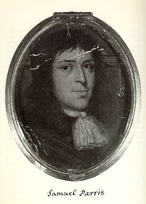

|  |
This portrait was found in 1982 among uncatalogued Endicott papers in the Massachusetts Historical Society. On the enclosing envelope William C. Endicott, Jr., had written, "Miniature of Rev. Mr. [Samuel] Parris. " Parris in his 1720 will had made reference to bequeathing "my own picture" to his son Noyes, and in 1790 another son, Deacon Samuel Parris, bequeathed to his son Samuel, "my Grandfather's and father's pictures. " An 1839 letter by Rev. G. W. Porter of Boston offered the loan "of the miniature Portrait of the Revd Mr.Paris of Salem" to artist Washington Allston for copying, an offer the artist declined. Although it is unknown how and where Endicott acquired this miniature, it is well known that he was an avid late 19th and early 20th century collector of local history memorabilia. The original brass-framed, color portrait measures 2 1/4 ' high by 1 3/4 " wide and is of the style typical of late 17th century English artists. It portrays a fair-complected man with aquiline nose, dark brown eyes and light brown, shoulder-length hair. He appears to be in his 20s or 30s, is wearing a knotted cravat and may very well be Samuel Parris prior to his religious calling. If so, this is the only known portrait of any inhabitant of 1692 Salem Village. Courtesy, Massachusetts Historical Society. |
 Go Back
Go Back